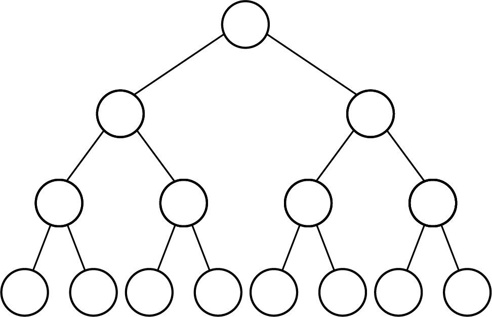
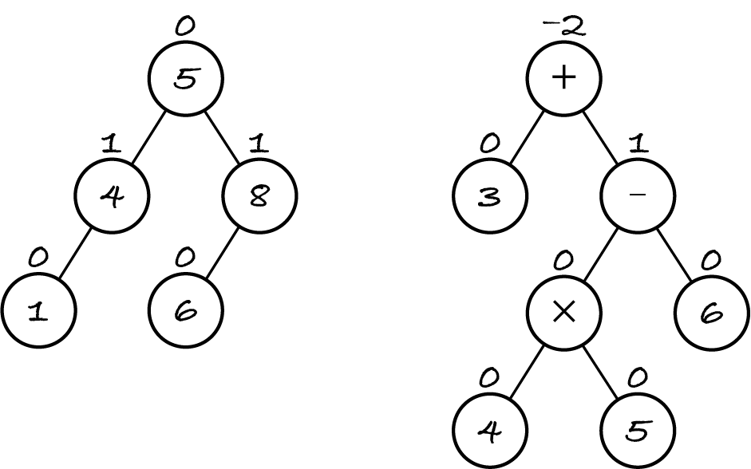

16.5. Balanced trees
As seen in the previous section, all the operations on a BST that aren’t traversals rely on search and some constant-time operations. So the complexity of adding or removing a node, or replacing a value, is the complexity of binary search over a BST.
16.5.1. Complexity of search
A binary search takes constant time for each call. What’s the best-case complexity of binary search on trees?
In the best case, the item sought is in the root and the search does one call: the complexity is Θ(1). Remember that a best- or worst-case scenario applies to varying input sizes, so the empty tree isn’t a best-case scenario.
In the worst case, the search will go all the way down to the deepest leaf, where the sought item may be. Such a search will do one recursive call per level: the worst-case complexity is Θ(height(tree)).
The height is maximal when the tree degenerates to a linked list, with each node having a single left or right child. In that case, each level has a single node, the height is equal to the size and the search has complexity Θ(│tree│).
The height is minimal when each level (except possibly the last one) is full, i.e. has as many nodes as possible. A perfect tree has minimal height for its size because all levels are full. Here’s the shape of a perfect tree with four levels.
Each level has double the nodes of the previous level because each parent has two children. The number of nodes thus grows exponentially with the height: it can be shown that a perfect tree of height \(h\) has \(2^h - 1\) nodes. This means that the minimal height for a tree of size \(n\) is \(\log_2 n\). So, binary search on a perfect tree has complexity Θ(log │tree│) in the worst case, when the sought item is in the lowest level.
It has been proven that if we add random comparable items one by one to an initially empty BST, then the height of the resulting BST is on average proportional to the logarithm of its size. Binary search thus has average complexity Θ(log │tree│).
16.5.2. Balanced trees
A perfect tree has minimal height because every node has subtrees of exactly the same height. No subtree is deeper than its sibling and so no subtree degenerates into a linked list.
Not every tree can have sibling subtrees with the same height. For example, a tree with only two nodes has necessarily one empty subtree of height 0 and one single-node subtree of height 1. To minimise the height of a binary tree we can only require subtrees to have as similar a height as possible. The precise definitions are as follows.
The balance factor of a node is the height of its left subtree minus the height of its right subtree, e.g. all leaves have balance factor 0. A binary tree is balanced if every node has balance factor −1, 0 or 1. In other words, for every node of a balanced tree, its subtrees differ in height by at most one. An empty tree is balanced. A perfect tree is perfectly balanced: all nodes have balance factor 0.
The next figure shows two trees you’ve seen before; each node is annotated with its balance factor. The left-hand tree is balanced because all balance factors are 0 or 1. For example, the nodes in the middle level have a left subtree of height 1 and an empty right subtree so their balance factor is 1 − 0 = 1. The other tree in the figure isn’t balanced. The root node has a left subtree of height 1 and a right subtree of height 3 so the balance factor is −2.
Even though the heights of sibling subtrees are not always equal, it can still be shown that the height of a balanced tree is proportional to the logarithm of its size, which is the best we can expect. A self-balancing BST checks after each node addition or removal if it has become unbalanced and, if so, restores the balance. This ensures that binary search (and thus every map operation) always takes logarithmic time in the worst case.
There are several self-balancing BST data structures, including AVL trees, which restore the balance by rotating subtrees left or right to decrease the height of one and increase the height of the other. You can watch a visualisation of an AVL tree but in M269 you’re not expected to know how an AVL tree works. The visualisation uses –1 instead of 0 as the height of an empty tree. The resulting balance factors are the same, because they’re the difference of two heights.
Info: M250 Unit 10 introduces Java classes TreeSet and TreeMap in package java.util. They implement the set and map ADTs with self-balancing BSTs.
Exercise 16.5.1
If both subtrees of a non-empty tree are balanced, so is the tree. True or false?
If a non-empty tree is balanced, so are both its subtrees. True or false?
16.5.3. Checking balance
To decide if a tree is balanced we need to check, for each node, if its balance factor is valid (-1, 0 or 1) and if both subtrees are balanced. Any traversal will do. I choose a pre-order traversal: the root is processed, i.e. its balance factor is computed, before traversing the subtrees.
[1]:
%run -i ../m269_tree
from algoesup import test
def height(tree: Tree) -> int:
"""Return how many levels the tree has."""
if is_empty(tree):
return 0
else:
return max(height(tree.left), height(tree.right)) + 1
def is_balanced(tree: Tree) -> bool:
"""Return True if and only if the tree is balanced."""
if is_empty(tree):
return True
else:
valid_factor = -1 <= height(tree.left) - height(tree.right) <= 1
left_balanced = is_balanced(tree.left)
right_balanced = is_balanced(tree.right)
return valid_factor and left_balanced and right_balanced
is_balanced_tests = [
('empty tree', Tree(), True),
('leaf', SIX, True),
('unbalanced', PMT, False),
('balanced', TPM, True)
]
test(is_balanced, is_balanced_tests)
Testing is_balanced...
Tests finished: 4 passed (100%), 0 failed.
Let’s first analyse the complexity of height. The worst-case scenario is a degenerate tree with one node per level, i.e. with height equal to the size. In that case, one subtree is empty and the other has all the remaining nodes. The divide-and-conquer approach degenerates to a decrease-by-one approach. If n is the size of the tree, then the complexity of the height function is:
T(0) to recursively handle the empty subtree
T(n – 1) to recursively handle the other subtree
Θ(1) to take the largest value and add one.
The base case takes constant time, so the recursive definition of T is:
if n = 0: T(0) = Θ(1)
if n > 0: T(n) = T(n − 1) + T(0) + Θ(1) = T(n − 1) + Θ(1).
This leads to T(n) = Θ(n).
Exercise 16.5.2
Define the worst-case complexity for is_balanced recursively. What is the resulting complexity?
The best-case scenario is the perfect tree, which has minimal height and equally divided nodes among the subtrees. The complexity is defined as above, but each recursive call now takes T(n / 2) time. So the best-case complexity for the height function is:
T(0) = Θ(1)
T(n) = T(n / 2) + T(n / 2) + Θ(1) = 2×T(n / 2) + Θ(1).
This leads to T(n) = Θ(n), which fits our intuition. Computing the height of a tree requires visiting all nodes, no matter how they’re distributed in the tree. Like the size operation, the height operation always takes linear time.
Having the best-case complexity of height, we can define the best-case complexity of is_balanced:
T(0) = Θ(1)
T(n) = 2×T(n/2) + Θ(n / 2) + Θ(n / 2) = 2×T(n/2) + Θ(n).
This leads to T(n) = Θ(n log n). Although the function is doing a linear time operation (computing the height) for each subtree, in a perfect tree each subtree has half the size, hence the logarithmic component.
Exercise 16.5.3
What changes would you make to the above algorithm to decide more efficiently whether a tree is balanced? You can describe the changes briefly instead of writing code.